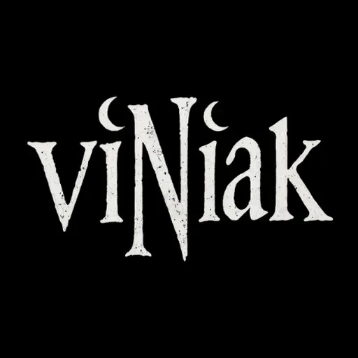

LA HISTORIA · Todo empieza con algo que importa
No partimos de una fórmula ni de una melodía vacía. Partimos de una historia, una contradicción o una emoción que merece ser contada.

viNiakRock & Metal en Castellano · Historias que merecen ser escuchadas
Una conversación. Un libro. Una herida. Una idea que no te deja en paz. viNiak transforma todo eso en letras originales y utiliza la inteligencia artificial para explorar cómo podrían sonar. La IA crea el boceto. El objetivo es llevarlo a músicos, al estudio y al escenario.
El universo viNiak
La tecnología puede ayudarnos a escuchar una idea. Solo las personas pueden convertirla en algo que permanezca.
No partimos de una fórmula ni de una melodía vacía. Partimos de una historia, una contradicción o una emoción que merece ser contada.
La convertimos en una letra original en castellano. No para explicarlo todo, sino para que cada persona pueda encontrar algo propio dentro de ella.
La inteligencia artificial nos permite probar voces, arreglos y atmósferas. No decide qué queremos contar. Nos ayuda a escuchar posibilidades.
Una demo no es la meta. La meta es reunir músicos, entrar en un estudio y hacer que esas canciones respiren delante del público.
Historias Cantadas
Cada pieza nace de una pregunta, una experiencia o una verdad difícil de decir de otra manera. Elige una. Escúchala hasta el final. Después decide qué significa para ti.
Cargando canciones...
“Queremos canciones que suenen.
Y que, cuando terminen, sigan dentro de ti.”
Del boceto al directo
viNiak ya tiene historias, letras y un repertorio en construcción. Ahora empieza la parte más importante: convertir una idea digital en una experiencia humana.
Identificar una idea que merezca ocupar una canción.
Convertir esa idea en palabras que puedan emocionar sin explicarlo todo.
Explorar estilos, arreglos y atmósferas hasta encontrar una dirección musical.
Encontrar músicos que compartan la visión y quieran transformar las demos.
Ensayar, grabar y hacer que las canciones dejen de pertenecer a una pantalla.
Crear Comunidad
Puedes escucharla, compartirla, discutir su significado o enviársela a alguien que necesite encontrarla. Cada reproducción es pequeña. Cada persona que se queda, le da vida.
Escucha una historia y dime cuál debería llegar al escenario.
Esto empieza cuando alguien escucha.